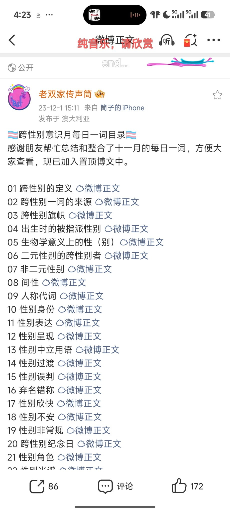
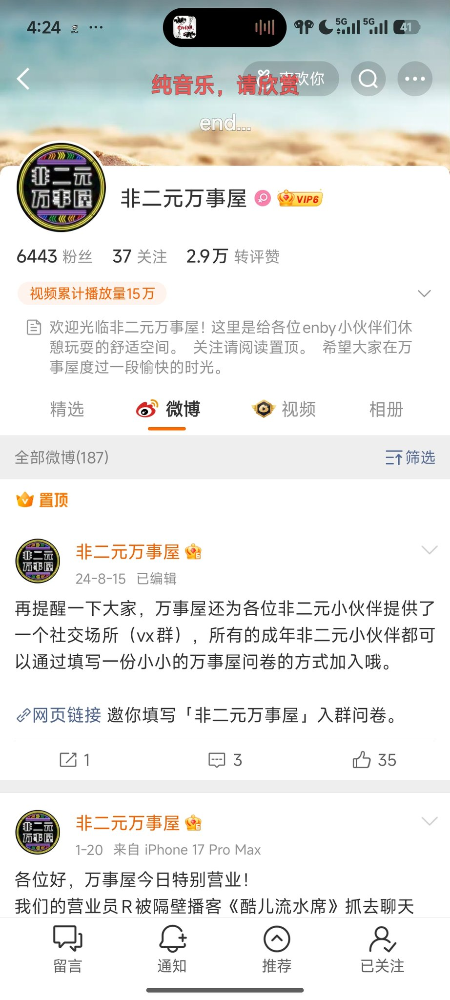

穗_🌾
@Sui_aini
@Cxz_p0v0q 微博的话，我推荐老双家的传声筒（ta的文章事关于整个性少数的科普，ta的置顶推文有分类），关于非二元科普的博主我推荐非二元万事屋，只是可惜大概停止运营了，可以翻一翻ta之前的推文


xiiiiii
@Cxz_p0v0q
@Sui_aini @go1415926 虽然有点突然，不是有意打扰的，请问可以给我推荐一下介绍跨跨群体的博主嘛？我已善用搜索，但是感觉很多串子，我身边有一些朋友是跨跨，但是我不太好意思直接问一些细节